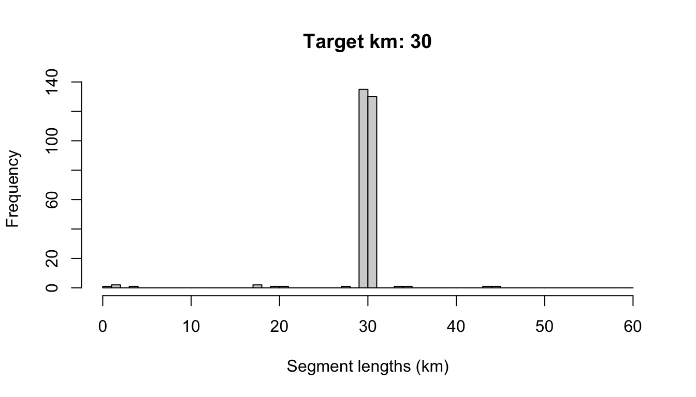

4 Data processing
Bring in cruise data
Specify the path to your .DAS data file(s):
Read in and process this .DAS file using the functions in Sam’s swfscDAS package. To do so quickly, we built a wrapper function that makes this quick and easy:
Cruise numbers:
2001 <NA>
48 0
Rows: 22,486
Columns: 40
$ Event <chr> "*", "*", "*", "*", "*", "*", "*", "*", "*", "*", "B", "R", …
$ DateTime <dttm> 2020-01-19 07:11:52, 2020-01-19 07:13:52, 2020-01-19 07:15:…
$ Lat <dbl> 21.79983, 21.80517, 21.81050, 21.81583, 21.82133, 21.82667, …
$ Lon <dbl> -159.7652, -159.7657, -159.7662, -159.7668, -159.7673, -159.…
$ OnEffort <lgl> FALSE, FALSE, FALSE, FALSE, FALSE, FALSE, FALSE, FALSE, FALS…
$ Cruise <dbl> NA, NA, NA, NA, NA, NA, NA, NA, NA, NA, 2001, 2001, 2001, 20…
$ Mode <chr> NA, NA, NA, NA, NA, NA, NA, NA, NA, NA, "C", "C", "C", "C", …
$ OffsetGMT <int> NA, NA, NA, NA, NA, NA, NA, NA, NA, NA, -10, -10, -10, -10, …
$ EffType <chr> NA, NA, NA, NA, NA, NA, NA, NA, NA, NA, NA, "F", "F", "F", "…
$ ESWsides <dbl> NA, NA, NA, NA, NA, NA, NA, NA, NA, NA, NA, 2, 2, 2, 2, 2, 2…
$ Course <dbl> NA, NA, NA, NA, NA, NA, NA, NA, NA, NA, NA, NA, NA, NA, 350,…
$ SpdKt <dbl> NA, NA, NA, NA, NA, NA, NA, NA, NA, NA, NA, NA, NA, NA, 9.9,…
$ Bft <dbl> NA, NA, NA, NA, NA, NA, NA, NA, NA, NA, NA, NA, NA, 4, 4, 4,…
$ SwellHght <dbl> NA, NA, NA, NA, NA, NA, NA, NA, NA, NA, NA, NA, NA, 6, 6, 6,…
$ WindSpdKt <dbl> NA, NA, NA, NA, NA, NA, NA, NA, NA, NA, NA, NA, NA, 15, 15, …
$ RainFog <dbl> NA, NA, NA, NA, NA, NA, NA, NA, NA, NA, NA, NA, NA, NA, NA, …
$ HorizSun <dbl> NA, NA, NA, NA, NA, NA, NA, NA, NA, NA, NA, NA, NA, NA, NA, …
$ VertSun <dbl> NA, NA, NA, NA, NA, NA, NA, NA, NA, NA, NA, NA, NA, NA, NA, …
$ Glare <lgl> NA, NA, NA, NA, NA, NA, NA, NA, NA, NA, NA, NA, NA, NA, NA, …
$ Vis <dbl> NA, NA, NA, NA, NA, NA, NA, NA, NA, NA, NA, NA, NA, NA, NA, …
$ ObsL <chr> NA, NA, NA, NA, NA, NA, NA, NA, NA, NA, NA, NA, "126", "126"…
$ Rec <chr> NA, NA, NA, NA, NA, NA, NA, NA, NA, NA, NA, NA, "307", "307"…
$ ObsR <chr> NA, NA, NA, NA, NA, NA, NA, NA, NA, NA, NA, NA, "238", "238"…
$ ObsInd <chr> NA, NA, NA, NA, NA, NA, NA, NA, NA, NA, NA, NA, NA, NA, NA, …
$ Data1 <chr> NA, NA, NA, NA, NA, NA, NA, NA, NA, NA, "2001", "F", "126", …
$ Data2 <chr> NA, NA, NA, NA, NA, NA, NA, NA, NA, NA, "C", NA, "307", "06"…
$ Data3 <chr> NA, NA, NA, NA, NA, NA, NA, NA, NA, NA, "-10", NA, "238", "1…
$ Data4 <chr> NA, NA, NA, NA, NA, NA, NA, NA, NA, NA, "N", NA, NA, NA, NA,…
$ Data5 <chr> NA, NA, NA, NA, NA, NA, NA, NA, NA, NA, NA, NA, NA, "15.0", …
$ Data6 <chr> NA, NA, NA, NA, NA, NA, NA, NA, NA, NA, NA, NA, NA, NA, NA, …
$ Data7 <chr> NA, NA, NA, NA, NA, NA, NA, NA, NA, NA, NA, NA, NA, NA, NA, …
$ Data8 <chr> NA, NA, NA, NA, NA, NA, NA, NA, NA, NA, NA, NA, NA, NA, NA, …
$ Data9 <chr> NA, NA, NA, NA, NA, NA, NA, NA, NA, NA, NA, NA, NA, NA, NA, …
$ Data10 <chr> NA, NA, NA, NA, NA, NA, NA, NA, NA, NA, NA, NA, NA, NA, NA, …
$ Data11 <chr> NA, NA, NA, NA, NA, NA, NA, NA, NA, NA, NA, NA, NA, NA, NA, …
$ Data12 <chr> NA, NA, NA, NA, NA, NA, NA, NA, NA, NA, NA, NA, NA, NA, NA, …
$ EffortDot <lgl> FALSE, FALSE, FALSE, FALSE, FALSE, FALSE, FALSE, FALSE, FALS…
$ EventNum <chr> "001", "002", "003", "004", "005", "006", "007", "008", "009…
$ file_das <chr> "HICEASwinter2020.das", "HICEASwinter2020.das", "HICEASwinte…
$ line_num <int> 1, 2, 3, 4, 5, 6, 7, 8, 9, 10, 11, 12, 13, 14, 15, 16, 17, 1…Format DAS data
Finalize formatting: remove rows with invalid locations and calculate the distance, in km, between each row of data. Other refinements can be added to this function later on.
Process strata
Run the following function to add strata and study-area information to each sub-segment of effort:
This function loops through each stratum data.frame you have provided it in settings$strata, formats the stratum, and asks whether each DAS row occurs within it. For each stratum, a column named stratum_<StratumName> is added to the das object; each row in this column is TRUE (included) or FALSE.
A similar procedure is run if a dataframe is provided in settings$study_area. A column named study_area is added to das containing a boolean (TRUE if the sub-segment or sighting occurs within the study area).
The function then loops through each species cohort and uses that cohort’s settings to determine a single stratum assignment for each row of DAS data in the event of overlapping strata. The key cohort setting referenced here is stratum_overlap_handling.
The cruz object
The function process_strata() returns a list, which we have saved in an object named cruz, with several slots:
The slots strata and study_area provide the area, in square km, of each polygon being used:
The slot cohorts is itself a list with one slot for each cohort. The slots are named using the id cohort setting.
Each cohort slot has a copy of the DAS data with a stratum assignment tailored to its cohort-specific settings. For instance, the default cohort, whose stratum_overlap_handling is set to "smallest", assigns the smallest stratum in the event of overlapping or nested strata:
The fkw_insular cohort, whose stratum_overlap_handling is set to "each" (i.e., effort is allowed to belong to multiple segments, if they overlap, and all analyses will be conducted for each stratum separately), has stratum assignments that look like this;
cruz$cohorts$fkw_insular$stratum %>% table(useNA='ifany')
.
HI_EEZ&OtherCNP HI_EEZ&WHICEAS&OtherCNP
142 22228 When a row of DAS effort occurs in two overlapping strata, the stratum assignment for that row is a concatentation of the names of the strata it falls within, with names separated by “&”.
This list, with these five primary slots, will be referred to as a cruz object. The remainder of the data processing work flow is focused upon refining the effort and sighting data for each slot in cohorts. The other slots are no longer modified.
Segmentize the data
To allocate survey data into discrete ‘effort segments’, which are used in variance estimation in subsequent steps, run the function segmentize(). This process is controlled by both survey-wide and cohort-specific settings, which are now carried in a slot within the cruz object.
This function does not change the high-level structure of the cruz object …
… or the cohort names in the cohorts slot …
But it does change the structure of data within each cohort. Each cohort will now have a slot named density …
And, if your settings specify that settings for density estimation differ from detection function estimation, a cohort will have a second slot named distance. This is the case for the second cohort in our example analysis: fkw_insular.
Though their data segmentization will differ, the density and distance slots have identical structures:
cruz$cohorts$fkw_insular$density %>% names
[1] "segments" "effort" "das"
cruz$cohorts$fkw_insular$distance %>% names
[1] "segments" "effort" "das" The segments slot contains summary data for each effort segment, including start/mid/end coordinates, average conditions, and segment distance:
cruz$cohorts$default$density$segments %>% glimpse
Rows: 278
Columns: 36
$ Cruise <dbl> 2001, 2001, 2001, 2001, 2001, 2001, 2001, 2001, 2001, 200…
$ stratum <chr> "HI_EEZ", "HI_EEZ", "HI_EEZ", "HI_EEZ", "HI_EEZ", "WHICEA…
$ study_area <lgl> TRUE, TRUE, TRUE, TRUE, TRUE, TRUE, TRUE, TRUE, TRUE, TRU…
$ seg_id <int> 1, 2, 3, 4, 5, 6, 7, 8, 9, 10, 11, 12, 13, 14, 15, 16, 17…
$ yday <dbl> 21, 22, 39, 68, 22, 19, 19, 19, 20, 20, 21, 22, 23, 23, 2…
$ dist <dbl> 3.2237470, 0.6118778, 29.7257476, 19.8973176, 1.2231556, …
$ lat1 <dbl> 22.33300, 22.68750, 20.79283, 21.65833, 22.68750, 21.8520…
$ lon1 <dbl> -161.2520, -161.1208, -153.6117, -161.7810, -161.1208, -1…
$ DateTime1 <dttm> 2020-01-21 07:28:48, 2020-01-22 07:42:01, 2020-02-08 06:…
$ timestamp1 <dbl> 1579591728, 1579678921, 1581144814, 1583688255, 157967892…
$ lat2 <dbl> 22.68750, 20.79217, 21.65683, 21.66717, 22.68617, 22.1771…
$ lon2 <dbl> -161.1208, -153.6090, -161.7753, -161.9295, -161.1158, -1…
$ DateTime2 <dttm> 2020-01-22 07:42:01, 2020-02-08 06:51:34, 2020-03-08 17:…
$ timestamp2 <dbl> 1579678921, 1581144694, 1583688135, 1583692815, 157967903…
$ mlat <dbl> 22.69117, 20.79133, 21.62583, 21.68417, 22.68750, 22.2345…
$ mlon <dbl> -161.1353, -153.6063, -161.6553, -161.8822, -161.1208, -1…
$ mDateTime <dttm> 2020-01-22 07:31:52, 2020-02-08 06:49:34, 2020-03-08 16:…
$ mtimestamp <dbl> 1579591728, 1579678921, 1581144814, 1583688255, 157967892…
$ use <lgl> FALSE, FALSE, FALSE, FALSE, TRUE, FALSE, FALSE, FALSE, FA…
$ Mode <chr> NA, "P", NA, "C", "P", "C", "C", "C", NA, "C", "C", "C", …
$ EffType <chr> NA, "S", NA, "S", "S", NA, "N", "F", NA, "S", "F", "S", "…
$ ESWsides <dbl> NA, 2, NA, 2, 2, NA, 2, 2, NA, 2, 2, 2, 2, 2, NA, 2, 2, 2…
$ year <dbl> 2020, 2020, 2020, 2020, 2020, 2020, 2020, 2020, 2020, 202…
$ month <dbl> 1, 1, 2, 3, 1, 1, 1, 1, 1, 1, 1, 1, 1, 1, 1, 1, 1, 1, 1, …
$ day <int> 21, 22, 8, 8, 22, 19, 19, 19, 20, 20, 21, 22, 23, 23, 24,…
$ min_line <int> 1080, 1549, 9811, 20825, 1550, 11, 240, 601, 701, 963, 14…
$ max_line <int> 1548, 9810, 20824, 20886, 1554, 239, 499, 700, 962, 1486,…
$ n_rows <int> 14, 3, 58, 62, 5, 103, 120, 99, 111, 164, 117, 89, 90, 59…
$ avgBft <dbl> NaN, NaN, 7.000000, 6.418047, 2.000000, 5.150894, 4.84389…
$ avgSwellHght <dbl> NaN, NaN, 7.000000, 7.000000, 4.000000, 7.433929, 7.20666…
$ avgHorizSun <dbl> NaN, NaN, 10.958794, 11.000000, NaN, 6.954993, 6.314060, …
$ avgVertSun <dbl> NaN, NaN, 1.058675, 2.418106, NaN, 1.419236, 1.178142, 2.…
$ avgGlare <dbl> NaN, NaN, 0.05867486, 1.00000000, NaN, 0.00000000, 0.4734…
$ avgVis <dbl> 4.000000, NaN, 5.000000, 4.709023, 6.200000, 5.641518, 6.…
$ avgCourse <dbl> NaN, NaN, 287.23315, 269.55972, 105.00000, 247.16155, 166…
$ avgSpdKt <dbl> NaN, NaN, 9.968032, 9.315076, 9.000000, 8.964329, 8.18859…# Number of segments
cruz$cohorts$default$density$segments %>% nrow
[1] 278
# Segment length distribution
hist(cruz$cohorts$default$density$segments$dist,
breaks = seq(0,60,by=1),
xlab='Segment lengths (km)',
main=paste0('Target km: ',settings$survey$segment_target_km))
The effort slot is itself a list in which each slot holds the DAS for a single segment.
And the das slot holds the original data.frame of DAS data, modified slightly: the column OnEffort has been modified according to Beaufort range conditions, and the column seg_id indicates which segment the event occurs within
cruz$cohorts$default$density$das %>% names
[1] "Event" "DateTime" "Lat" "Lon"
[5] "OnEffort" "Cruise" "Mode" "OffsetGMT"
[9] "EffType" "ESWsides" "Course" "SpdKt"
[13] "Bft" "SwellHght" "WindSpdKt" "RainFog"
[17] "HorizSun" "VertSun" "Glare" "Vis"
[21] "ObsL" "Rec" "ObsR" "ObsInd"
[25] "Data1" "Data2" "Data3" "Data4"
[29] "Data5" "Data6" "Data7" "Data8"
[33] "Data9" "Data10" "Data11" "Data12"
[37] "EffortDot" "EventNum" "file_das" "line_num"
[41] "year" "month" "day" "yday"
[45] "km_int" "km_cum" "stratum_HI_EEZ" "stratum_WHICEAS"
[49] "stratum_OtherCNP" "study_area" "stratum" "seg_id"
[53] "use" The segmentize() function and its associated settings were designed to give researchers full control over how data are segmented, be it for design-based density analysis (which tend to use long segments of 100 km or more and allow for non-contiguous effort to be included in the same segment) or for habitat modeling (which tend to use short segments of 5 - 10 km and disallow non-contiguous effort to be pooled into the same segment). To demonstrate that versatility, checkout the appendix on segmentizing.
Process sightings
To process sightings for each cohort of species, use the function process_sightings(). This function has three basic steps: for each cohort, the function (1) prepares a sightings table using the function das_sight() from swfscDAS; (2) filters those sightings to species codes specified for the cohort in your settings input; and (3) evaluates each of those sightings, asking if each should be included in the analysis according to your settings.
The function produces a formatted dataset and adds it to a new sightings slot. It does this for each analysis (density and, if specified, distance) in each cohort.
cruz$cohorts$default$density %>% names
[1] "segments" "effort" "das" "sightings"
cruz$cohorts$fkw_insular$density %>% names
[1] "segments" "effort" "das" "sightings"
cruz$cohorts$fkw_insular$distance %>% names
[1] "segments" "effort" "das" "sightings"Note that the sightings table has a column named included (TRUE = yes, use it in the analysis). Any sightings that do not meet the inclusion criteria as specified in your settings will be included = FALSE, but they won’t be removed from the data.
Since the sightings in each cohort are processed slightly differently, and since each cohort is species-group specific, you should expect different numbers of included/excluded sightings in each cohort-analysis dataset:
cruz$cohorts$default$density$sightings$included %>% table
.
FALSE TRUE
143 266
cruz$cohorts$fkw_insular$density$sightings$included %>% table
.
FALSE TRUE
1 4
cruz$cohorts$fkw_insular$distance$sightings$included %>% table
.
TRUE
5 When this function’s verbose argument is TRUE (the default), a message is printed each time a sighting does not meet the inclusion criteria (see above).
Sightings data structure
The sightings table has many other variables:
cruz$cohorts$default$density$sightings %>% names
[1] "Event" "DateTime" "Lat" "Lon"
[5] "OnEffort" "Cruise" "Mode" "OffsetGMT"
[9] "EffType" "ESWsides" "Course" "SpdKt"
[13] "Bft" "SwellHght" "WindSpdKt" "RainFog"
[17] "HorizSun" "VertSun" "Glare" "Vis"
[21] "ObsL" "Rec" "ObsR" "ObsInd"
[25] "EffortDot" "EventNum" "file_das" "line_num"
[29] "year" "month" "day" "yday"
[33] "km_int" "km_cum" "stratum_HI_EEZ" "stratum_WHICEAS"
[37] "stratum_OtherCNP" "study_area" "stratum" "seg_id"
[41] "use" "SightNo" "Subgroup" "SightNoDaily"
[45] "Obs" "ObsStd" "Bearing" "Reticle"
[49] "DistNm" "Cue" "Method" "Photos"
[53] "Birds" "CalibSchool" "PhotosAerial" "Biopsy"
[57] "CourseSchool" "TurtleSp" "TurtleGs" "TurtleJFR"
[61] "TurtleAge" "TurtleCapt" "PinnipedSp" "PinnipedGs"
[65] "BoatType" "BoatGs" "PerpDistKm" "species"
[69] "best" "low" "high" "prob"
[73] "mixed" "n_sp" "n_obs" "n_best"
[77] "n_low" "n_high" "calibr" "included" Here is a glimpse of the data:
cruz$cohorts$fkw_insular$distance$sightings %>% glimpse
Rows: 5
Columns: 80
$ Event <chr> "S", "s", "S", "S", "S"
$ DateTime <dttm> 2020-01-28 16:35:09, 2020-01-28 16:41:59, 2020-02-27 …
$ Lat <dbl> 20.80800, 20.79717, 18.83133, 19.13683, 18.20767
$ Lon <dbl> -158.3488, -158.3442, -157.1577, -156.3863, -154.7485
$ OnEffort <lgl> TRUE, FALSE, TRUE, TRUE, TRUE
$ Cruise <dbl> 2001, 2001, 2001, 2001, 2001
$ Mode <chr> "C", "C", "C", "C", "C"
$ OffsetGMT <int> -10, -10, -10, -10, -10
$ EffType <chr> "S", "S", "S", "N", "S"
$ ESWsides <dbl> 2, 2, 2, 2, 2
$ Course <dbl> 122, 122, 285, 90, 107
$ SpdKt <dbl> 9.6, 9.6, 9.4, 8.6, 7.9
$ Bft <dbl> 3, 3, 5, 5, 6
$ SwellHght <dbl> 5, 5, 8, 7, 11
$ WindSpdKt <dbl> 10, 10, 17, 17, 24
$ RainFog <dbl> 5, 5, 5, 5, 5
$ HorizSun <dbl> 4, 4, 7, 3, 4
$ VertSun <dbl> 2, 2, 1, 1, 1
$ Glare <lgl> FALSE, FALSE, FALSE, FALSE, FALSE
$ Vis <dbl> 6.0, 6.0, 5.5, 5.0, 4.0
$ ObsL <chr> "238", "238", "238", "197", "125"
$ Rec <chr> "125", "125", "125", "227", "197"
$ ObsR <chr> "197", "197", "197", "126", "227"
$ ObsInd <chr> NA, NA, NA, NA, NA
$ EffortDot <lgl> TRUE, FALSE, TRUE, TRUE, TRUE
$ EventNum <chr> "422", "429", "213", "238", "371"
$ file_das <chr> "HICEASwinter2020.das", "HICEASwinter2020.das", "HIC…
$ line_num <int> 5016, 5030, 15756, 16275, 18395
$ year <dbl> 2020, 2020, 2020, 2020, 2020
$ month <dbl> 1, 1, 2, 2, 3
$ day <int> 28, 28, 27, 28, 3
$ yday <dbl> 28, 28, 58, 59, 63
$ km_int <dbl> 0.0000000000, 0.5481950970, 0.0000000000, 0.000000000…
$ km_cum <dbl> 2437.120, 2439.638, 8902.680, 9186.375, 10120.889
$ stratum_HI_EEZ <lgl> TRUE, TRUE, TRUE, TRUE, TRUE
$ stratum_WHICEAS <lgl> TRUE, TRUE, TRUE, TRUE, TRUE
$ stratum_OtherCNP <lgl> TRUE, TRUE, TRUE, TRUE, TRUE
$ study_area <lgl> TRUE, TRUE, TRUE, TRUE, TRUE
$ stratum <chr> "HI_EEZ&WHICEAS&OtherCNP", "HI_EEZ&WHICEAS&OtherCNP",…
$ seg_id <int> 165, 21, 241, 116, 252
$ use <lgl> TRUE, FALSE, TRUE, TRUE, TRUE
$ SightNo <chr> "131", "131", "255", "258", "285"
$ Subgroup <chr> NA, NA, NA, NA, NA
$ SightNoDaily <chr> "20200128_8", NA, "20200227_19", "20200228_18", "2020…
$ Obs <chr> "197", NA, "125", "126", "125"
$ ObsStd <lgl> TRUE, FALSE, TRUE, TRUE, TRUE
$ Bearing <dbl> 79, 79, 0, 15, 314
$ Reticle <dbl> 1.8, 4.5, NA, 1.5, 5.0
$ DistNm <dbl> 1.88, 1.00, 0.20, 2.09, 0.92
$ Cue <dbl> 3, NA, 2, 3, 3
$ Method <dbl> 4, NA, 1, 4, 4
$ Photos <chr> "Y", NA, "N", "Y", "N"
$ Birds <chr> "N", NA, "N", "N", "N"
$ CalibSchool <chr> "N", NA, "N", "N", "N"
$ PhotosAerial <chr> "N", NA, "N", "N", "N"
$ Biopsy <chr> "N", NA, "N", "N", "N"
$ CourseSchool <dbl> NA, NA, NA, NA, NA
$ TurtleSp <chr> NA, NA, NA, NA, NA
$ TurtleGs <dbl> NA, NA, NA, NA, NA
$ TurtleJFR <chr> NA, NA, NA, NA, NA
$ TurtleAge <chr> NA, NA, NA, NA, NA
$ TurtleCapt <chr> NA, NA, NA, NA, NA
$ PinnipedSp <chr> NA, NA, NA, NA, NA
$ PinnipedGs <dbl> NA, NA, NA, NA, NA
$ BoatType <chr> NA, NA, NA, NA, NA
$ BoatGs <dbl> NA, NA, NA, NA, NA
$ PerpDistKm <dbl> 3.417790, 3.417790, 0.000000, 1.001806, 1.225640
$ species <chr> "033", "033", "033", "033", "033"
$ best <dbl> 32.800869, 32.800869, NaN, 13.913043, 6.956522
$ low <dbl> 19.672365, 19.672365, NA, 9.165151, 5.000000
$ high <dbl> 43.42268, 43.42268, NA, 16.58312, 20.00000
$ prob <lgl> FALSE, FALSE, FALSE, FALSE, FALSE
$ mixed <lgl> FALSE, FALSE, FALSE, FALSE, FALSE
$ n_sp <dbl> 1, 1, 1, 1, 1
$ n_obs <int> 3, 3, 1, 2, 1
$ n_best <int> 3, 3, 0, 2, 1
$ n_low <int> 3, 3, 0, 2, 1
$ n_high <int> 3, 3, 0, 2, 1
$ calibr <lgl> TRUE, TRUE, TRUE, TRUE, TRUE
$ included <lgl> TRUE, TRUE, TRUE, TRUE, TRUENote that the process_sightings() function draws upon cruz$settings for inclusion criteria, but some of those settings can be overridden with the function’s manual inputs if you want to explore your options.
School size estimates
In the settings we are using in this tutorial, school size estimates are adjusted using the calibration models from Barlow, Gerrodette, and Perryman (1998) (their analysis is refined slightly and further explained in Gerrodette, Perryman and Barlow, 2002). These calibration corrections are observer-specific. Some observers tend to underestimate school size and their estimates are adjusted up; others tend to overestimate and their estimates are adjusted down. Some observers do not have calibration coefficients, and for them a generic adjustment (upwards, by dividing estimates by 0.8625) is used. Each observer’s estimate is calibrated, then all observer estimates are averaged. To do that averaging, our settings specify that we shall use a geometric weighted mean, instead of an arithmetic mean, that weights school size estimates from multiple observers according to the variance of their calibration coefficients.
Here are our current best estimates of school size:
cruz$cohorts$default$density$sightings$best %>% head(20)
[1] 1.000000 18.457718 18.457718 3.342736 3.342736 1.000000 2.000000
[8] 2.000000 2.000000 3.000000 2.000000 2.000000 1.000000 1.000000
[15] 1.000000 69.279021 69.279021 1.000000 1.000000 4.637681Let’s compare those estimates to unadjusted ones, in which calibration (and therefore weighted geometric mean) is turned off:
cruz_demo <- process_sightings(cruz,
calibrate = FALSE,
verbose = FALSE)
cruz_demo$cohorts$default$density$sightings$best %>% head(20)
[1] 1.000000 19.191111 19.191111 3.475556 3.475556 1.000000 2.000000
[8] 2.000000 2.000000 3.000000 2.000000 2.000000 1.000000 1.000000
[15] 1.000000 78.333333 78.333333 1.000000 1.000000 4.000000Since calibration is only used for schools above a certain size, the difference between calibration and non-calibrated estimates becomes clearer in larger groups.
You can also carry out calibration corrections without using a geometric weighted mean (the arithmetic mean will be used instead):
cruz_demo <- process_sightings(cruz,
calibrate = TRUE,
geometric_mean = FALSE,
verbose = FALSE)
cruz_demo$cohorts$default$density$sightings$best %>% head(20)
[1] 1.000000 20.945347 20.945347 3.793252 3.793252 1.000000 2.000000
[8] 2.000000 2.000000 3.000000 2.000000 2.000000 1.000000 1.000000
[15] 1.000000 86.815274 86.815274 1.000000 1.000000 4.637681Note that school size calibration is only carried out if settings$group_size_calibration is not NULL. However, even when calibration coefficients are provided, calibration is only carried out for raw estimates above a minimum threshold, since observers are unlikely to mis-estimate the school size of a lone whale or pair. For observers who have calibration coefficients in the settings$group_size_coefficients table, that minimum is specified for each observer individually. For observers not in that table, calibration will only be applied to raw school size estimates of 4 or above.